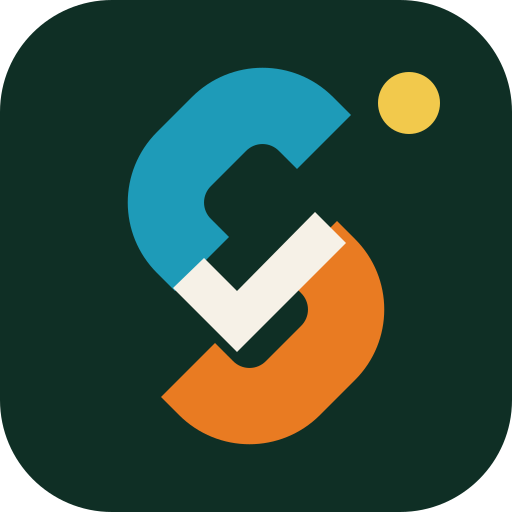

Turn any source into a traceable knowledge packet.
Capture an article, post, thread, video, PDF, or local research export. LinkForge creates structured reports, evidence maps, visual PDFs, and SHA-256 provenance.

Capture an article, post, thread, video, PDF, or local research export. LinkForge creates structured reports, evidence maps, visual PDFs, and SHA-256 provenance.